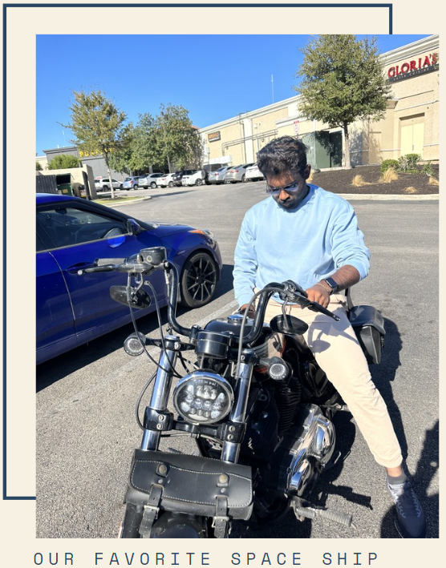
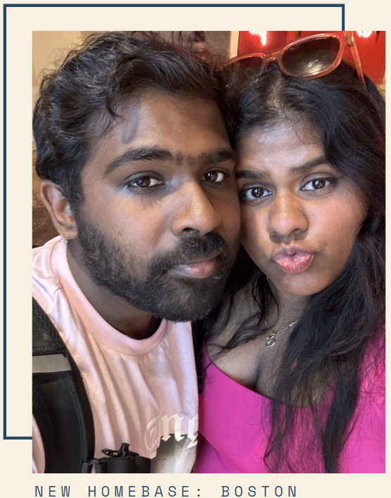

3 YEARS 36 MONTHS 156 WEEKS 1,095 DAYS 26,280 HOURS 1,576,800 MINUTES 94,608,000 SECONDS
LOOK ITS BARBIE AND KEN! HEHE THIS WAS MY FAVORITE DAY IT BOSTON. WE JUST RAN AROUND THE WHOLE DAY EATING GOOD FOOD AND WE DRESS UP. BARBIE IS MY FAVORITE MOVIE NOT BECAUSE OF THE PINK BUT BECAUSE IT REMIND ME OF MY BABY. I LOVED BEING IN BOSTON AND SEEING MY BABY EVERYDAY. WE HAD COUNTLESS ADVENTURES AT 10 WEST STREET AND I CHERISH ALL OF THEM. THIS WAS ALSO THE HARDEST GOODBYE EVER MEOW. I MISSY YOU SO MUCH AND I CAN'T WAIT TO BE IN MASS AGAIN.
MY BABY WITH SUSHI! YOU WERE SO CUTE WHEN YOU CAME TO HOLD SUSHI! HE WAS SCARED BUT ITS OKAY HE LIKE YOUR SMELLY FEET HEHE. MY MOOKA ALSO SUPRISE ME!! YOURE THE CUTEST CUTIE IN THE WHOLE WORLD AND I WAS SO HAPPY WHEN YOU WERE THERE (EVEN THO I HAD MY SUSPISCIONS HEHE)
THIS IS THE YEAR WE SPENT A LOT OF TIME ON MOTORCYCLES HEHE. ME AND MY MOOKA ZOOM ZOOM EVERYWHERE. IT WAS KINDA SCAWY RIDING THIS MOTORCYCLE IN SAN ANTONIO AFTER THE ACCIDENT BUT ITS OKAY BECAUSE MY BABY KEEP US SAFE. MY BABY SO COOL ON MOTORCYCLE. MY BABY THE COOLEST PERSON EVER AND I LOVE SHOWING YOU OFF. IM SO LUCKY TO HAVE SOMEONE LIKE MY BABY IN MY LIFE. I CANT WAIT TO LOOK BACK ON A LIFETIME AND SEE ALL OF THE PRECIOUS MEMORIES WE MADE. I LOVE YOU BABY. HAPPY ANNIVERSARY. MUWAHHH.